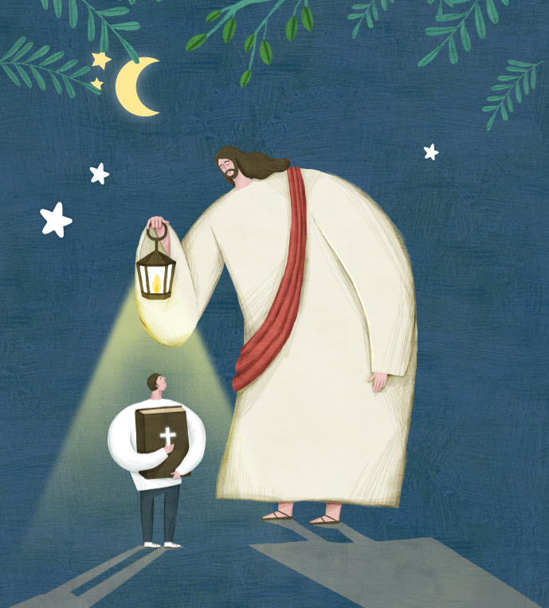

열린문교회 여름수련회
2022년7월29일(금)~7월30일(토)

Open Door Church
학생 청년부 여름수련회
7월29일 (1일차)
수련회 출발
09:00
열린문교회 출발
10:30
정읍 두암성결교회 (110km)
12:00
(점심)명승중화요리 (100km)
13:30
문준경 전도사 순교기념관 (13km)
16:00
중도 시온민박 (2km)
18:00
휴식 및 저녁준비
20:00
예배 및 프로그램
22:00
휴식 및 취침 준비
7월30일 (2일차)
2일차 시작!!
08:00
기상 및 아침
09:30
출발
12:00
(점심)여수시 식당 (210km)
13:00
손양원 목사 순교기념관
15:00
여수 아쿠아플라넷 (26km)
17:00
부여로 출발 (220km)
20:00
도착
견학지 안내
정읍 두암교회
윤임례 집사와 22인의 신앙정신
문준경 전도사
순교기념관
업데이트 중입니다.